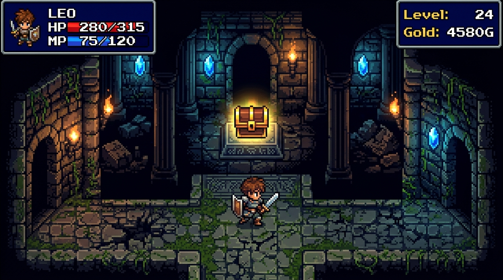

★ MAIN QUEST ★ 主线任务
《封印高并发恶龙：分布式事务与熔断结界》

DUNGEON LEVEL: CHAMBER OF CONCURRENCY (B4F)
MANA CRYSTAL ACTIVE
【任务简报】
在零点大促敲响之际，沉睡于底层数据网关的「高并发恶龙」突然喷吐百万级并发火球。连接池被两阶段提交（2PC）的刚性锁完全封死，下游服务接连化为灰烬。橘猫勇者受命拔出架构重构之剑，下潜至集群最深处构筑结界。
【三阶段攻略】
PHASE 1
第一阶段：布设熔断结界
在网关层施加自适应令牌桶（Token Bucket）与滑动窗口限流结界，把非核心商户查询果断降级，防止主干线程池被直接冲垮。
PHASE 2
第二阶段：切断锁竞争链条
废弃沉重的 XA 强一致锁协议，改用编排式 Saga 异步状态机。各微服务仅本地落库，由补偿事件驱动逆向回滚，吞吐释放 800%。
PHASE 3
第三阶段：释放无锁环形阵
在内存关键路径部署 Disruptor 环形缓冲区，依靠 CAS 乐观自旋与 CPU 缓存行填充（Padding），斩断伪共享（False Sharing）。
🎯 Boss 弱点判定：恶龙极度惧怕「幂等键校验」与「异步削峰队列」。当面对严格的唯一约束冲突时，其分裂攻击将完全失效。
📋 通关复盘 (Postmortem Report)
- 根因定性：未做热点行锁分段，单行库存争抢造成数据库连接队列堆积。
- 战损评估：零掉单，P99 延迟由 4800ms 骤降至 18ms，节点 CPU 占用平稳回落至 45%。
- 遗留改进：为后续所有核心流水线强制推行「最终一致性混沌演练」。